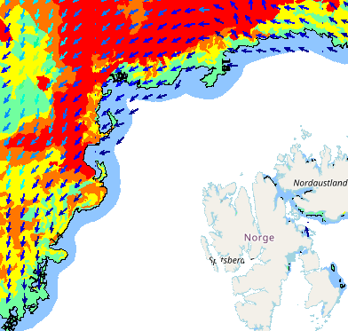
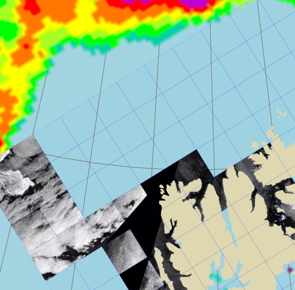

End-users
Hurtigruten is the world’s largest expedition cruise company and has the world’s largest fleet of cruise vessels purpose built for polar water. Their fleet explores waters of around Svalbard, Greenland, Arctic Russia, Arctic Canada and Antarctica. The Norwegian Coast Guard (Kystvakten) is a maritime military force which is part of the Royal Norwegian Navy. The coast guard's responsibility are for fisheries inspection, customs enforcement, border control, law enforcement, shipping inspection, environmental protection, and search and rescue.
Precursor Service Developments
 The services developed in the FOCUS project will built up on a demonstration service developed in the research project SALIENSEAS. This service included an interactive viewer, which allows to visualize a combination of observed (sea-ice charts) and forecast model produced sea-ice conditions. An important component is a time-slide which allows the user to assess forecast model reliability in time and space. This demontration service has been co-developed with an inter-disciplinary team of researchers and end-users (Hurtigruten and Greenland Pilots).
 In the pilot project SvalNav, the company DriftNoise and the Norwegian Meteorological Institute developed an application which allows end-users to access sentinel-1 SAR high-resolution observations in combination with sea-ice drift information from a forecast model system. The novel aspect of this application is the low-bandwidth solution developed by DriftNoise to give the users the possibility to get very localized and up-to-date sea-ice monitoring information. Second, a calibration software package developed by the Norwegian Meteorological Institute based on machine learning technique to advance model simulated sea-ice drift forecasts.